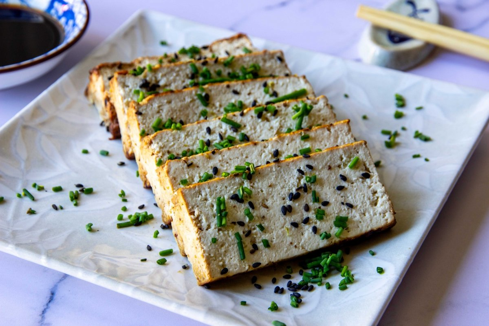

INICIO
SOBRE MÍ
RECETAS
CONTACTO
OTRAS COSAS

Tofu a la Plancha
Por Chef Vegano
DNI:
12345678A
Ingredientes:
Tofu: 200gramos
Salsa de soja: 2cucharadas
Preparación:
Cortar el tofu en láminas.
Marinar con la salsa de soja durante 10 minutos.
Cocinar en una sartén hasta que esté dorado.